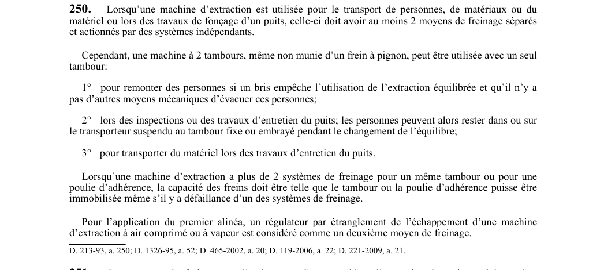

art-250-RSSM : deux freinages à systèmes indépendants
Une machine d'extraction ne doit jamais dépendre d'une commande unique : elle porte deux freinages distincts, chacun actionné par son propre système, pour qu'une défaillance isolée ne puisse pas la laisser sans frein.
Visé : employeur · Nature : obligation
- Minimum de 2 moyens de freinage séparés, actionnés par des systèmes indépendants : c'est l'indépendance des systèmes de commande, et pas seulement le nombre de freins, qui est exigée.
- S'applique dès que la machine sert au transport de personnes, de matériaux ou de matériel, ou aux travaux de fonçage d'un puits.
- Dérogation étroite : une machine à 2 tambours, même sans frein à pignon, peut tourner sur un seul tambour dans 3 cas seulement, soit remonter des personnes quand un bris empêche l'extraction équilibrée et qu'aucun autre moyen mécanique d'évacuation n'existe, soit inspecter ou entretenir le puits (les personnes peuvent alors rester sur le transporteur pendant le changement de l'équilibre), soit transporter du matériel lors de l'entretien du puits.
- Au-delà de 2 systèmes de freinage sur un même tambour ou une même poulie d'adhérence, la capacité doit rester suffisante pour immobiliser ce tambour ou cette poulie malgré la défaillance de l'un des systèmes.
- Sur une machine à air comprimé ou à vapeur, un régulateur par étranglement de l'échappement compte comme le deuxième moyen de freinage exigé au premier alinéa.
🌐 LegisQuébec · 📄 PDF officiel
Texte officiel
Lorsqu’une machine d’extraction est utilisée pour le transport de personnes, de matériaux ou du matériel ou lors des travaux de fonçage d’un puits, celle-ci doit avoir au moins 2 moyens de freinage séparés et actionnés par des systèmes indépendants.
Cependant, une machine à 2 tambours, même non munie d’un frein à pignon, peut être utilisée avec un seul tambour:
1° pour remonter des personnes si un bris empêche l’utilisation de l’extraction équilibrée et qu’il n’y a pas d’autres moyens mécaniques d’évacuer ces personnes;
2° lors des inspections ou des travaux d’entretien du puits; les personnes peuvent alors rester dans ou sur le transporteur suspendu au tambour fixe ou embrayé pendant le changement de l’équilibre;
3° pour transporter du matériel lors des travaux d’entretien du puits.
Lorsqu’une machine d’extraction a plus de 2 systèmes de freinage pour un même tambour ou pour une poulie d’adhérence, la capacité des freins doit être telle que le tambour ou la poulie d’adhérence puisse être immobilisée même s’il y a défaillance d’un des systèmes de freinage.
Pour l’application du premier alinéa, un régulateur par étranglement de l’échappement d’une machine d’extraction à air comprimé ou à vapeur est considéré comme un deuxième moyen de freinage.
Texte de l’article 250 RSSM, extrait de la couche texte du PDF officiel (page 73), sans OCR ni retouche. La capture ci-dessous et le PDF font foi.
{kind=link}

Toucher l'image pour l'agrandir🔗 Voir art. 250 RSSM dans le PDF (page 73)
Version : texte officiel du RSSM (RLRQ c. S-2.1, r. 14), à jour au 1er mai 2024, Éditeur officiel du Québec
Voir aussi
- art. 248 : décélération maximale freinage urgence personnes · interdiction : le système de freinage d'urgence d'une machine d'extraction utilisée pour le transport de personnes ne doit pas produire une décélération supérieure à 7,5 m (24,6 pi) par seconde carrée ; pour les machines installées à compter du 1er avril 1993.
- art. 249 : interdiction freins urgence position desserrée · interdiction : le système de freinage d'urgence doit être conçu de façon à ce que les freins d'urgence ne puissent pas être enclenchés en position desserrée suite à l'ouverture du circuit de sécurité à moins que les freins de service n'exercent leur action totale.
- ⚖️ Loi habilitante : LSST
- ↑ Index du bloc : Engins miniers
Pages qui pointent ici (6)
- art-225-RSSM : essais freinage opérateur début quart Recueil législatif
- art-226-RSSM : essai simultané freins à pignon Recueil législatif
- art-248-RSSM : décélération maximale freinage urgence personnes Recueil législatif
- art-249-RSSM : interdiction freins urgence position desserrée Recueil législatif
- art-342-RSSM : retenue exigée pour travailler sur un transporteur Recueil législatif
- RSSM : Engins miniers (art. 201 à 250) Recueil législatif